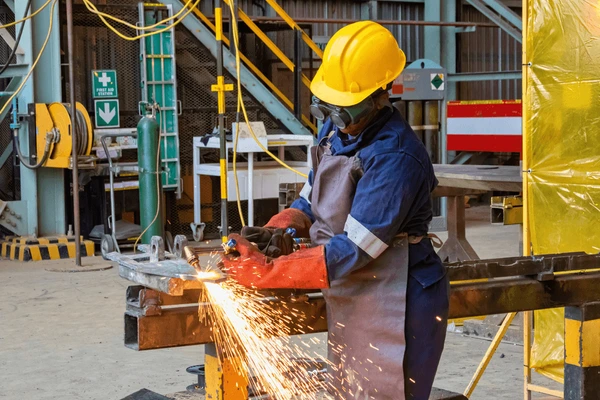
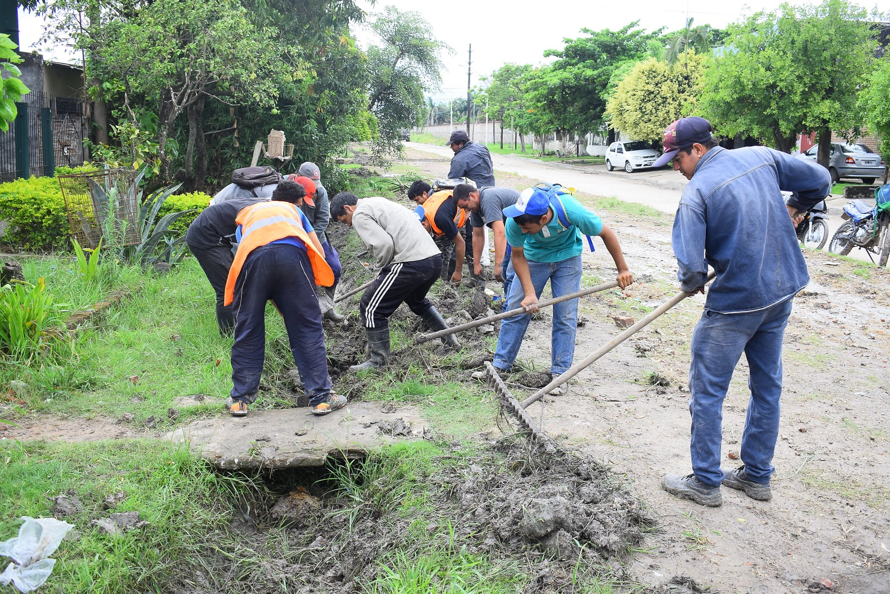

El desarrollo de una sociedad depende en gran medida de tres factores fundamentales: la industria, los servicios públicos y la tecnología. Estos elementos influyen directamente en la calidad de vida de la población, la generación de empleo, el crecimiento económico y la integración territorial.
En la provincia de Formosa, estos procesos han experimentado una evolución importante a lo largo del tiempo. Desde una economía basada principalmente en actividades primarias como la ganadería, la agricultura y la explotación forestal, la provincia ha avanzado hacia una mayor diversificación productiva, acompañada por mejoras en infraestructura, servicios y tecnología.
|
 |
 |
|
Sector Industrial |
Sector Público |
Cambios Tecnológicos |
La evolución del sector industrial, los servicios públicos y la tecnología demuestra que Formosa ha experimentado importantes transformaciones a lo largo de su historia. Aunque durante mucho tiempo su economía estuvo centrada en actividades primarias, actualmente la provincia presenta avances en industrialización, infraestructura, conectividad y modernización tecnológica.
A pesar de que todavía existen diferencias significativas respecto de provincias más industrializadas como Buenos Aires, Córdoba o Santa Fe, los procesos de crecimiento observados en los últimos años muestran una tendencia hacia una mayor diversificación productiva y un fortalecimiento de las capacidades tecnológicas y de servicios públicos. El desafío futuro será consolidar estos avances para lograr un desarrollo económico y social sostenible.